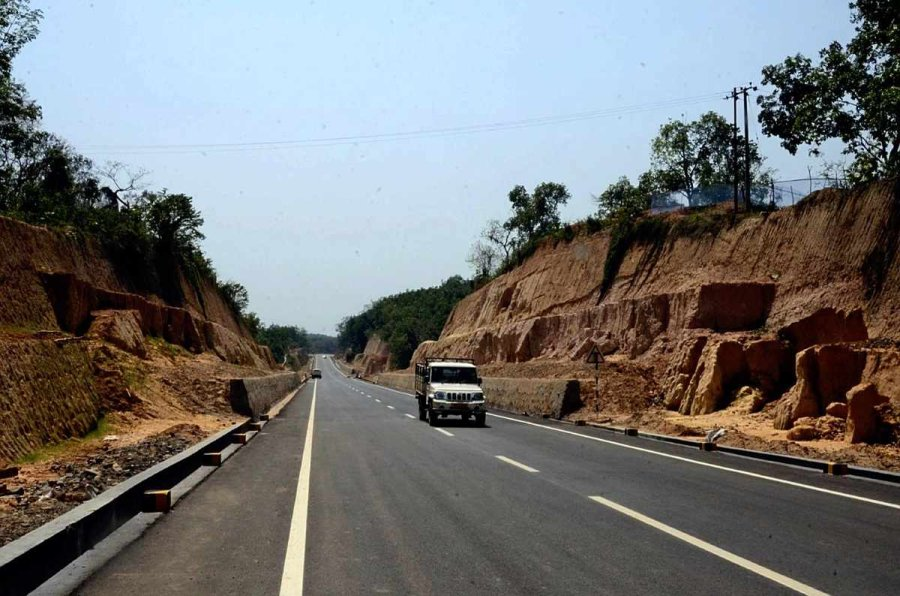

Japan Supports Indian Roads in Rivalry with China's Belt and Road Initiative

Once upon a time, there were two giant economies with a passion for infrastructure development. China and India competed to build roads, railways, and ports in Asia and Africa. Both countries had their own ambitious plans to connect the world, but their visions were different. China proposed a massive network of transportation and communication, called the Belt and Road Initiative (BRI). Meanwhile, India advocated for a more sustainable and transparent system, known as the International North-South Transport Corridor (INSTC). Both projects were welcomed by many countries, but also faced criticisms and challenges.
The Rise of Japan's Diplomacy
In recent years, a third player has entered the game. Japan, one of the wealthiest and most technologically advanced countries in the world, has stepped up its diplomatic efforts to promote its own values and interests in Asia and beyond. Unlike China, which often uses its economic clout to gain political influence, Japan emphasizes the importance of quality infrastructure, human development, and rule-based cooperation. This approach has caught the attention of some BRI participant countries, who seek a balance between economic benefits and strategic autonomy.
The India-Japan Partnership
One of Japan's key partners in this rivalry with China is India. The two countries share a strategic convergence based on democracy, open society, and maritime security. They have cooperated on various fronts, from defense to technology, and now they are expanding their collaboration on infrastructure. The INSTC, which aims to connect India, Iran, and Russia via a network of roads, railways, and ports, is a prime example of this partnership. Japan has pledged to support the project by providing technical expertise, financial assistance, and promotion.
The Benefits of Indian Roads
Why are Japanese and Indian leaders so interested in building roads in Asia and Europe? What are the benefits for them and for the recipient countries? Here are some reasons:
- Economic Growth: Roads are a fundamental component of trade and commerce. They allow goods and services to move faster, cheaper, and safer than other modes of transportation. This boost in economic activity can create jobs, increase incomes, and reduce poverty. According to the World Bank, every 1% increase in road density leads to a 0.5% increase in GDP per capita in developing countries.
- Connectivity: Roads can connect not only countries but also regions and communities. They can bridge the digital divide, enhance social cohesion, and promote cultural exchange. They can also facilitate tourism, which can bring revenue and awareness to local destinations. According to the World Tourism Organization, international tourist arrivals reached 1.4 billion in 2018, and road travel accounted for 44% of all arrivals.
- Security: Roads can enhance national and regional security by improving surveillance, mobility, and disaster response. They can also deter illicit activities such as smuggling, trafficking, and terrorism. Moreover, roads can foster cooperation and trust between neighboring countries, which can reduce tensions and conflicts. According to the United Nations, road accidents kill more than 1.3 million people every year, and most of the fatalities occur in developing countries with poor infrastructure and safety standards.
The Challenges of Indian Roads
However, building roads is not always a smooth ride. There are several challenges that need to be addressed, such as:
- Funding: Roads require massive investments, both in terms of capital and maintenance. The costs can vary depending on the terrain, climate, and standards, but they can easily run into billions of dollars per kilometer. The sources of funding can also vary, from public to private, domestic to foreign, but they need to be sustainable and transparent. The lack of funding or the mismanagement of funds can lead to delays, corruption, and debt, which can undermine the credibility and viability of the projects.
- Environment: Roads can have significant environmental impacts, such as deforestation, soil erosion, air and water pollution, and carbon emissions. They can also disrupt ecosystems, habitats, and biodiversity. Therefore, it is crucial to conduct thorough environmental assessments, and to follow mitigation and adaptation measures. The adherence to international environmental standards and agreements can also help to reduce the adverse effects of roads on the planet.
- Geopolitics: Roads can be both a tool of cooperation and a weapon of rivalry. They can enhance or challenge the balance of power, the territorial claims, and the strategic interests of the countries involved. Therefore, the choice of routes, the types of partnerships, and the level of transparency can have geopolitical implications. The adherence to international laws and norms, and the respect for the sovereignty and dignity of the recipient countries can also help to minimize the geopolitical risks of roads.
The Future of Indian Roads
Despite the challenges, Japanese and Indian leaders remain committed to building better roads in Asia and beyond. They see it as a way to promote their values and interests, to support their partners, and to contribute to the global development agenda. They also see it as a way to counterbalance the influence of China's BRI, which they view as a potential threat to the existing order. Whether their efforts will succeed or not, only time will tell. However, one thing is certain: roads will continue to shape the way we live, work, and interact with each other for generations to come.
Conclusion
- The rivalry between Japan and China in infrastructure development has intensified in recent years, with both countries promoting their own visions and values.
- The partnership between Japan and India on the International North-South Transport Corridor exemplifies the competition in connectivity and the convergence in strategy between two democratic powers.
- The benefits of building roads in Asia and Europe include economic growth, connectivity, and security, while the challenges include funding, environment, and geopolitics.
Reference urls:
- https://asia.nikkei.com/Politics/International-relations/Japan-s-aid-program-sidesteps-China-s-Belt-and-Road-initiative
- https://www.project-syndicate.org/commentary/china-cannot-back-too-many-belts-by-jun-hyang-wooten-and-khalid-malik-2021-03
- https://www.britannica.com/topic/International-North-South-Transport-Corridor
Hashtags: #Japan #India #China #BRI #INSTC #infrastructure #connectivity #security
SEO Keywords: Japanese diplomacy, international connectivity, infrastructure challenges, economic growth, environmental impact, geopolitical risks
Category: International Relations
Curated by Team Akash.Mittal.Blog
Curated by Team Akash.Mittal.Blog
Share on Twitter Share on LinkedIn